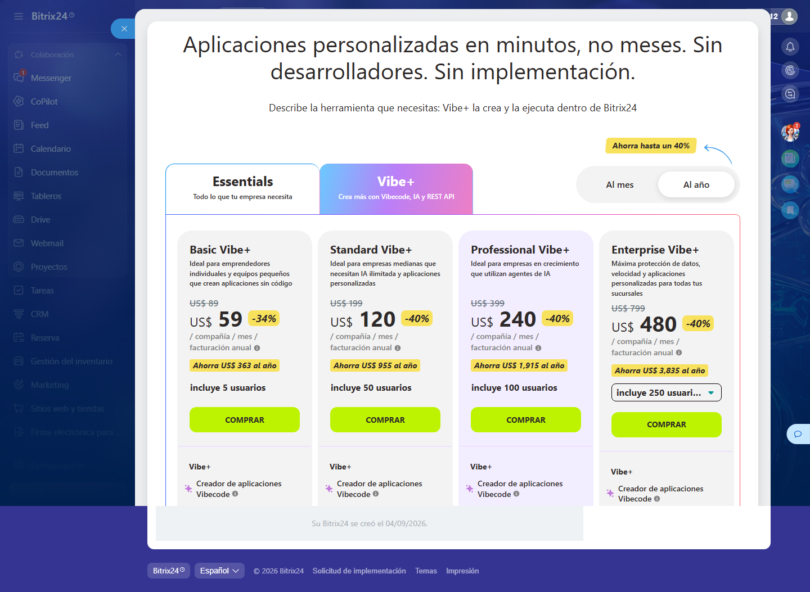

limites
Límites reales del plan Free
Criterio E5 — Rendimiento con volumen
! Se borra a los 50 días
Qué se probó: ¿Qué topes tiene el plan gratuito y dónde aprieta?
El portal se ELIMINA si no se inicia sesión en 50 días. No lo suspende: lo borra con los datos adentro.
